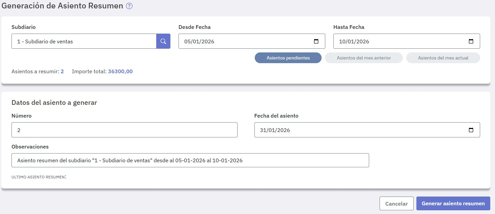
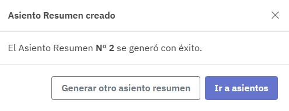

Asiento resumen de Subdiarios
En esta tarea podés resumir los subdiarios que definiste en el diario general. Hasta tanto no la ejecutes, los asientos que conforman los subdiarios no estarán disponibles en el mismo.
Los asientos resumen deben realizarse por cada uno de los subdiarios que definiste, es decir, tenés que generar uno por cada uno de ellos.

Una vez que indicaste el subdiario a resumir, informá el rango de fechas, si bien podés ingresarlas manualmente disponés de botones para facilitarte la tarea.
Indicado el rango de fechas se muestran la cantidad de asientos a resumir y el importe total correspondiente.
Para la generación del asiento tenés que ingresar:
Al pie de la pantalla se informa el último asiento resumen generado para este subdiario, su número, la cantidad de asientos resumidos y las observaciones del mismo.
Una vez completados los datos presioná "Generar asiento resumen" y se emite un aviso de confirmación.

Tené en cuenta los siguientes limitaciones:
- Un asiento resumen no puede editarse, sólo se lo puede consultar o eliminar.
- Un asiento de subdiario que ha sido resumido no se podrá eliminar ni editar mientras exista el correspondiente asiento resumen en el libro de Diario general, solo se podrá visualizar.